新学期开始了，学校启用了“校园 AI 迎新系统”。新生报到时，系统会为每位新生输出一张专属档案卡片，档案包含姓名、学号、性别、专业、年龄、身高、籍贯等信息（见⟦图1-1⟧）。AI 迎新系统是如何输出专属档案的呢？
本项目依托 AI 辅助学习，认识 C 语言程序设计、C 语言程序结构和 C 语言程序的执行过程，编写第一个 C 语言程序，搭建属于自己的个人专属档案。
说明：⟦图1-1⟧ 是情境示意图。本项目编写的是在运行窗口中输出档案文字的程序，不实现图中的图形界面、照片显示和 AI 对话功能。
学习之前，先动手运行一个现成的程序，体会一下“改代码—编译—运行—看结果”。
如果编译出错，先检查是不是误删了引号、括号或分号。电脑上还没有安装小熊猫C++ 的，先看老师演示，学完任务三后再做一遍。
printf 函数输出各类数据的方法校园 AI 迎新系统可以自动显示新生的个人档案卡片，经了解，该系统是通过 C 语言程序设计编程实现的。请结合 AI 辅助检索，学习并理解 C 语言程序设计是什么、为什么要学它以及学了能做什么，掌握 C 语言程序设计的学习思路，并完成个人学习认知笔记。
借助 AI 工具查阅资料，认识 C 语言程序设计并掌握其学习思路，为后续搭建个人专属档案做好知识铺垫。本任务可以分三步完成：先阅读“相关知识”，弄清基本概念；再用 AI 工具围绕三个问题检索、追问；最后对照教材核对 AI 的说法，写出自己的认知笔记。
“程序设计”中的程序，指的就是计算机程序。学习 C 语言程序设计，就是学习用 C 语言编写计算机程序，让计算机按照我们的要求完成任务。
做一道番茄炒蛋，要按照菜谱一步一步来：先打蛋，再切番茄，再下锅翻炒……步骤少了或者顺序错了，菜就做不成。计算机也是这样，它不会“猜”我们想做什么，只会严格按照一条条指令去执行。为了让计算机完成某项任务而编写的、按一定顺序排列的指令集合，就叫计算机程序。
把一项任务分析清楚、设计出解决步骤、用计算机语言写成程序，再经过运行测试和修改，直到程序符合要求，这个完整的过程就叫程序设计。写程序只是其中的一环，想清楚“要做什么、分几步做”往往更重要。
人和人交流用汉语、英语等自然语言，人和计算机“交流”则要用计算机语言。计算机语言的发展大致经历了三个阶段（见⟦图1-4⟧）：
MOV、ADD 等英文缩写（助记符）代替 0 和 1，比机器语言好读一些，但仍与具体的硬件紧密相关。用高级语言写出的程序叫源程序（源代码），计算机不能直接执行。C 语言源程序要先由编译器“翻译”成机器语言，生成可执行程序，才能运行。这个过程在任务三中详细介绍。
C 语言是一种通用的高级语言，1972 年前后由美国贝尔实验室的丹尼斯·里奇（Dennis M. Ritchie）设计，最初用来编写 UNIX 操作系统。半个多世纪以来，C 语言一直是使用最广泛的编程语言之一，它的主要特点是：
也许你会想：现在 AI 都能写代码了，还有必要学 C 语言吗？答案是肯定的，理由主要有以下几点：
C 语言的应用范围非常广，从电脑、手机的操作系统，到家电、汽车、工厂设备里的控制芯片，都有 C 程序在运行。下面重点看看它在工科领域中的应用（见⟦图1-5⟧）。
本书选用两款国内常用的 AI 工具作为学习助手：DeepSeek（深度求索公司推出）和豆包（字节跳动公司推出）。它们都可以通过网页或手机 App 免费使用，能用中文对话，还可以打开“联网搜索”功能查找最新资料。使用时请通过官方网站或正规应用商店获取，注意以下三点：
认识程序我是高职一年级学生，没有编程基础。请用做菜的例子解释什么是计算机程序，150 字以内。
认识语言机器语言、汇编语言、高级语言有什么区别？请用表格对比，每格不超过 15 个字。
为什么学我是新能源（光伏）专业的学生，学习 C 语言对我以后的工作有什么帮助？请举 3 个具体的岗位例子。
应用领域请举例说明 C 语言在机器人 / 无人机 / 数控机床中用来做什么，并说明信息来源。
本任务借助 AI 工具，围绕“C 语言程序设计是什么、为什么学、学了能做什么”三个问题拓展认识，并整理成个人学习认知笔记。
打开 DeepSeek 或豆包（网页版或手机 App 均可），新建一个对话。准备好笔记本，或翻到本书
依次使用上面的四条搜索话术提问。如果回答里有看不懂的词，就接着追问，例如：
你刚才说光伏逆变器里有“MPPT 算法”，这是什么意思？请用一句话解释，再打个比方。
MPPT 是“最大功率点跟踪”，就是让光伏板一直在发电最多的状态下工作。打个比方：就像骑变速自行车时不断换挡，让自己始终用最省力、最快的挡位前进。逆变器里的程序会不停地测量电压、电流，再调整工作点。
这个程序一般用什么语言写？你的说法有什么依据？
把 AI 的回答和本书“相关知识”逐条对照：一致的，打“√”；不一致或拿不准的，标出来，课上请教老师或同学。记住，AI 的回答只是线索，不是结论。
结合教材和 AI 的回答，用自己的话填写下表。下表最后一行“我的学习思路”可以参考⟦图1-6⟧。
| 问题 | 我的理解（用自己的话写） | AI 补充 / 待核实 |
|---|---|---|
| C 语言程序设计是什么？ | ||
| 为什么要学 C 语言？ | ||
| 学了 C 语言能做什么？（结合专业） | ||
| 我的学习思路与本学期目标 |
依托校园 AI 迎新系统和基础 C 语言程序示例，归纳总结 C 语言完整程序的基本组成与固定结构，参照规范编写个人专属档案卡片，显示姓名、性别、年龄、学号和专业，熟练掌握 C 语言基础编码规范。
结合 AI 迎新系统和 C 语言案例，读懂 C 语言程序结构，仿写代码并掌握基础编码规范。具体来说：先读懂三个典型的示例程序，再归纳出 C 程序的“固定结构”和书写规则，然后学会用 printf 输出文字和数字，最后仿照示例写出个人专属档案卡片。
⟦表1-2⟧个人专属档案卡片的内容（资料为虚构）
| 项目 | 姓名 | 性别 | 年龄 | 学号 | 专业 |
|---|---|---|---|---|---|
| 内容 | 林小禾 | 女 | 18 岁 | 2026150218 | 人工智能技术应用 |
| 特点 | 文字 | 文字 | 整数 | 由数字组成的编号 | 文字 |
| 必会 | 保存、编译、运行程序；用 printf 输出文字，用 \n 换行，用 %d 输出整数；根据提示改正漏写分号、用了中文标点等简单错误 |
| 跟着用 | 照着示例使用给定的变量（如 int age = 18;）和 %f、%.2f、%c、%s 等格式说明符，项目二再系统学习 |
| 选学 | 自己编写函数（⟦例1-3⟧）；\t、\"、\\、%% 等写法先作速查，用到时再查，不要求第一遍全部记住 |
先来看两个典型的小程序。每个程序都给出了逐行注释（// 后面的文字）和运行结果，程序后面紧跟“读程序”，逐行解释它的含义。现在不必记住所有细节，重点是对 C 程序“长什么样”“怎么运行”先有个整体印象。
⟦例1-1⟧ 必会输出一行欢迎语。这是最简单的 C 程序：在屏幕上输出一行文字。
说明：运行窗口中分隔线以上是程序的输出；分隔线以下是小熊猫C++ 附加显示的运行信息（耗时、返回值等，每次运行的数值略有不同），不是程序输出的内容。
⟦表1-3⟧读程序：⟦例1-1⟧
| 行号 | 代码 | 含义 |
|---|---|---|
| 1 | #include <stdio.h> | 预处理指令：把标准输入输出头文件 stdio.h 包含到程序中。程序要用 printf 输出，就要写这一行。末尾不加分号 |
| 2 | （空行） | 空行不影响程序运行，用来把不同部分隔开，让程序更清楚 |
| 3 | int main(void) | 主函数的开头。每个 C 程序有且只有一个 main 函数，程序从这里开始执行 |
| 4 | { | 左花括号，表示函数体开始 |
| 5 | printf("欢迎…！\n"); | 调用 printf 函数，把双引号中的文字原样输出；\n 表示换行。这条语句以英文分号 ; 结束 |
| 6 | return 0; | 结束 main 函数，向操作系统返回 0，表示程序正常结束（运行窗口中的“返回值: 0”就是它） |
| 7 | } | 右花括号，表示函数体结束，与第 4 行的左花括号配对 |
⟦例1-2⟧ 必会输出报到人数。迎新系统统计了某天上午和下午的报到人数，要求输出这两个整数和当天合计。
⟦表1-4⟧读程序：⟦例1-2⟧
| 行号 | 代码 | 含义 |
|---|---|---|
| 1～4 | 与⟦例1-1⟧ 相同：预处理指令、主函数开头、函数体开始 | |
| 5 | printf("上午报到：%d 人\n", 1268); | 双引号中的 %d 是格式说明符（占位符），表示“这里输出一个十进制整数”。输出时，逗号后面的 1268 会填到 %d 的位置，其余文字原样输出 |
| 6 | printf("下午报到：%d 人\n", 532); | 同上，在 %d 处输出 532 |
| 7 | printf("今日合计：%d 人\n", 1268 + 532); | 输出项可以是一个算式（表达式）：先算出 1268+532=1800，再把结果填到 %d 处 |
| 8～9 | 返回 0，函数体结束 | |
对比这两个示例可以发现，C 程序有一个“固定结构”：预处理指令 + 主函数，主函数由函数头和函数体组成，程序中还可以有注释。下面以一个输出年龄的小程序为例（见⟦图1-11⟧）。
（1）预处理指令。以 # 开头的行是预处理指令，在正式编译之前处理。#include <stdio.h> 的作用是把“标准输入输出头文件”包含进来，printf 等输入输出函数的说明都在这个文件里。本书还会用到数学函数头文件 math.h 和字符串函数头文件 string.h，用到时再介绍。预处理指令末尾不加分号。
（2）主函数。int main(void) 是主函数的函数头。一个 C 程序有且只有一个 main 函数，无论它写在什么位置，程序都从 main 开始执行。int 表示 main 函数执行完会返回一个整数，return 0; 就是返回 0，表示程序正常结束；(void) 表示 main 函数不需要参数。
（3）函数体。花括号 { } 括起来的部分是函数体，一般分为两部分：前面是声明部分，用来定义变量，如 int age = 18;；后面是执行部分，由若干条语句组成，如 printf(…);，计算机按从上到下的顺序逐条执行。
（4）注释。注释是写给人看的说明，编译器会忽略它，不影响程序运行。C 语言有两种注释：// 后面直到本行末尾的内容是单行注释；/* 和 */ 之间的内容是多行注释，可以跨越多行。好的注释能让自己和别人更快读懂程序。
写程序和写作文一样，有必须遵守的“语法规则”，也有让程序更好读的“书写规范”。违反规则，程序编译不通过；不遵守规范，程序虽然能运行，但难读、难改、容易出错。
⟦表1-6⟧C 程序必须遵守的规则
| 规则 | 错误示例 | 编译器提示（节选） |
|---|---|---|
① 变量定义、printf 语句、return 语句的末尾都要加英文分号 ; | printf("姓名：%s\n", "林小禾")（第 5 行末尾漏了分号） | error: expected ';' before 'printf'（在下一行的 printf 之前缺少 ;） |
| ② 代码中的标点必须是英文半角符号 | printf("姓名：%s\n", "林小禾")；（用了中文分号） | error: expected ';' before '\U0000ff1b'（\U0000ff1b 就是中文分号“；”） |
| ③ 严格区分大小写 | Printf("姓名：%s\n", "林小禾");（P 写成了大写） | warning: implicit declaration of function 'Printf'; did you mean 'printf'?undefined reference to `Printf'（先警告“是不是想写 printf”，连接时再报错：找不到名为 Printf 的函数） |
| ④ 括号、引号必须成对出现 | printf("姓名：%s\n", "林小禾";（少了右括号） | error: expected ')' before ';' token（在分号之前缺少右括号） |
| ⑤ 有且只有一个 main 函数 | int mian(void)（main 写成了 mian）同一个文件中写了两个 main 函数 | undefined reference to `WinMain'（连接时出错：找不到程序的入口） error: redefinition of 'main'（编译时出错：main 重复定义） |
注：表中提示取自本书环境（小熊猫C++ 3.4 自带的 MinGW-w64 GCC 11.5.0，默认编译选项），其他编译器的提示文字可能不同。双引号里面的中文和中文标点（如“姓名：”）是要输出的内容，不受规则②限制。
书写规范没有强制要求，但能大大提高程序的可读性。请比较下面两段代码，它们的运行结果完全一样：
本书采用的书写规范是：
在小熊猫C++ 中选择“代码”→“对代码重新排版”（快捷键 Ctrl+Shift+A），可以自动整理缩进和换行。它默认把左花括号放在函数头的行末，这也是一种常见的规范写法。不过，好习惯还是要从自己动手写规范的代码开始。
printf 是 C 语言中最常用的输出函数，名字来自 print format（按格式输出）。它的一般形式是：
printf("格式控制字符串", 输出项1, 输出项2, …);格式控制字符串中的普通字符原样输出；以 % 开头的格式说明符是占位符，按顺序用后面的输出项替换；以 \ 开头的转义字符表示特殊的控制作用，如 \n 换行。常用的格式说明符见⟦表1-7⟧，其中 %d 是必会内容，%f、%.2f、%c、%s 先跟着示例使用，%% 作为速查。
⟦表1-7⟧printf 常用的格式说明符
| 格式说明符 | 输出的数据 | 示例 | 输出结果 |
|---|---|---|---|
%d | 十进制整数 | printf("%d", 18); | 18 |
%f | 小数（默认 6 位小数） | printf("%f", 1.68); | 1.680000 |
%.2f | 小数，保留 2 位小数 | printf("%.2f", 1.68); | 1.68 |
%c | 一个字符 | printf("%c", 'A'); | A |
%s | 字符串（一串文字） | printf("%s", "林小禾"); | 林小禾 |
%% | 一个百分号 % | printf("100%%"); | 100% |
下面的程序把这些格式说明符放在一起试一试。最后一行说明：一个格式控制字符串里可以有多个格式说明符，它们与后面的输出项按顺序一一对应。
注意，字符要用单引号括起来，如 'A'；字符串要用双引号括起来，如 "林小禾"。这些数据类型的详细知识将在项目二中学习。
常用的转义字符见⟦表1-8⟧，用法见下面的程序。其中 \n 是必会内容，其余三个先作速查。
⟦表1-8⟧常用的转义字符
| 转义字符 | 含义 | 转义字符 | 含义 |
|---|---|---|---|
\n | 换行，光标移到下一行开头 | \" | 输出一个双引号 |
\t | 跳到下一个制表位（对齐用） | \\ | 输出一个反斜杠 |
printf("你好")B. printf("你好")；C. printf("你好");D. Printf("你好");printf("%d+%d=%d\n", 3, 5, 3 + 5); 的输出结果：。printf("身高：____ 米\n", 1.68);⟦例1-3⟧ 选学用子函数输出分隔线。档案卡片的上下都有分隔线，可以把“输出分隔线”写成一个单独的函数，需要时调用它。
⟦表1-5⟧读程序：⟦例1-3⟧（选学）
| 行号 | 代码 | 含义 |
|---|---|---|
| 3 | void show_line(void) | 定义一个名为 show_line 的子函数（自己编写的函数）。第一个 void 表示函数不返回值，括号中的 void 表示不需要参数 |
| 4～6 | { printf("====…\n"); } | 子函数的函数体：输出一条分隔线 |
| 8 | int main(void) | 主函数。注意：虽然子函数写在前面，程序仍然从 main 开始执行 |
| 10 | show_line(); | 调用子函数：转去执行第 4～6 行，输出分隔线，执行完再回到这里继续往下 |
| 11 | printf(" 校园AI迎新系统\n"); | 输出系统名称，前面的空格用来让文字居中一些 |
| 12 | show_line(); | 再次调用子函数，又输出一条分隔线。同一个函数可以多次调用 |
编写程序时，可以按照 C 程序的结构“从上到下”来写：先写程序框架，再定义变量，最后写输入、处理和输出。这是今后编写每一个程序都可以遵循的步骤。
任何 C 程序都可以从下面这个“空框架”开始：预处理指令、主函数、函数体和 return 0;。它虽然什么也不输出，但已经是一个能编译、能运行的完整程序。
档案中的“年龄”是一个整数，把它保存在一个变量里，以后年龄变了只需改一处。定义变量写在函数体的开头：
int 表示变量的类型是整数，age 是变量名，= 18 表示变量的初始值是 18。变量的详细知识见项目二（
学号虽然由数字组成，但它是一个编号，不用来做加减乘除，有的学号还以 0 开头（如 0215），用整数输出会丢掉开头的 0。所以学号、电话号码、身份证号这类“数字编号”，一般当作字符串处理。
一个完整的程序通常包括输入数据、处理数据、输出结果三个环节。本任务中档案资料都是已知的，不需要从键盘输入，也不需要计算，只需要输出。按卡片从上到下的顺序，每一行内容用一条 printf 语句输出：
如何在小熊猫C++ 中输入、编译和运行这个程序，将在任务三中详细介绍。
训练 1 补充完整：新生报到凭条。新生报到后，迎新系统会打印一张报到凭条（资料为虚构）：姓名林小禾，宿舍为 6 号楼 302 室 2 号床，校园卡余额 100 元（保留 2 位小数），报到时间 9 月 1 日 9:30。请把下面的程序补充完整，使其输出⟦图1-13⟧ 所示的凭条。
填写：① ② ③ ④
完成后，把程序保存为 slip.c，在任务三中上机运行验证。
训练 2 改一项需求。完成训练 1 后，不看答案，把凭条改为：宿舍是 7 号楼 415 室 3 号床，校园卡余额 86.5 元，余额只保留 1 位小数。先写出你预测的凭条内容，再在任务三中上机核对。
训练 3 独立完成：社团活动通知。不看示例程序，只根据⟦图:club⟧ 的要求，独立编写 club.c，输出机器人社团的活动通知，其中名额 30 用 %d 输出。完成后，再换成另一项校园活动（资料自拟）。
任务二中编写的个人专属档案程序要想正常运行并显示卡片信息，需要搭建配套的开发环境。请借助 AI 辅助工具，安装与配置小熊猫C++，熟悉软件的基本操作，掌握代码编辑、编译、连接、运行的完整执行流程，调试并成功运行个人专属档案程序。
借助 AI 辅助完成开发环境的安装与配置，理解 C 语言程序的完整执行流程，学会简单调试并成功运行个人专属档案程序。本任务分两部分：一是装好、配好小熊猫C++；二是在小熊猫C++ 中走通“编辑→编译→连接→运行”的完整流程，并学会根据错误提示修改程序。
编写、运行一个 C 程序，需要编辑器（写代码）、编译器（把源程序翻译成可执行程序）、调试器（查找错误）等多种工具。把这些工具集成在一个软件里、用菜单和快捷键就能完成全部操作的软件，叫作集成开发环境（Integrated Development Environment，简称 IDE）。常用的 C 语言集成开发环境见⟦表1-9⟧。
⟦表1-9⟧常用的 C 语言集成开发环境
| 名称 | 主要特点 | 适合人群 |
|---|---|---|
| Dev-C++ | 小巧免费，操作简单，曾是许多学校和程序设计竞赛的常用环境 | 初学者 |
| Code::Blocks | 免费开源，可在 Windows、Linux 等系统上使用，功能较全 | 初学者、进阶者 |
| Visual Studio | 微软公司出品，功能强大，安装包较大，对电脑配置要求较高 | 进阶者 |
| Visual Studio Code | 轻量级代码编辑器，需要另外安装编译器和插件，配置步骤较多 | 有一定基础者 |
| 小熊猫C++ | 免费开源，中文界面；安装包自带 GCC 编译器，装好即可使用；操作方式与 Dev-C++ 相似，并提供代码补全、语法检查、调试等功能 | 初学者（本书选用） |
本书选用小熊猫C++（Red Panda C++），它是由国内开发者在 Dev-C++ 基础上发展而来的开源软件，全中文界面，下载一个安装包就能完成全部配置，非常适合初学者。本书使用的版本为 3.4（64 位，自带 MinGW-w64 GCC 11.5.0 编译器）。
学校机房的计算机一般已经按统一要求安装、配置好小熊猫C++。这时可以跳过下面的（1）（2）两步，从（3）认识主界面开始，在（4）中设置自己的工作文件夹，并检查编译器配置是否正确即可。
（1）下载安装包。小熊猫C++ 的安装包可以从其开源项目的发布页面下载（地址：https://sourceforge.net/projects/redpanda-cpp/files/，进入 v3.4 文件夹）。64 位 Windows 系统请选择带编译器的安装版：
RedPanda.C++.3.4.win64.MinGW64_11.5.0.Setup.exe文件名中的 win64 表示适用于 64 位 Windows，MinGW64_11.5.0 表示自带 GCC 11.5.0 编译器，Setup 表示安装版。也可以请 AI 帮忙：“小熊猫C++ 的官方下载地址是什么？安装包有哪几种，我该选哪一个？”但下载前一定要确认是官方地址。
（2）安装。双击安装包，按⟦图1-14⟧ 的顺序完成安装，一般保持默认选项即可。
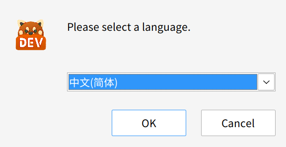
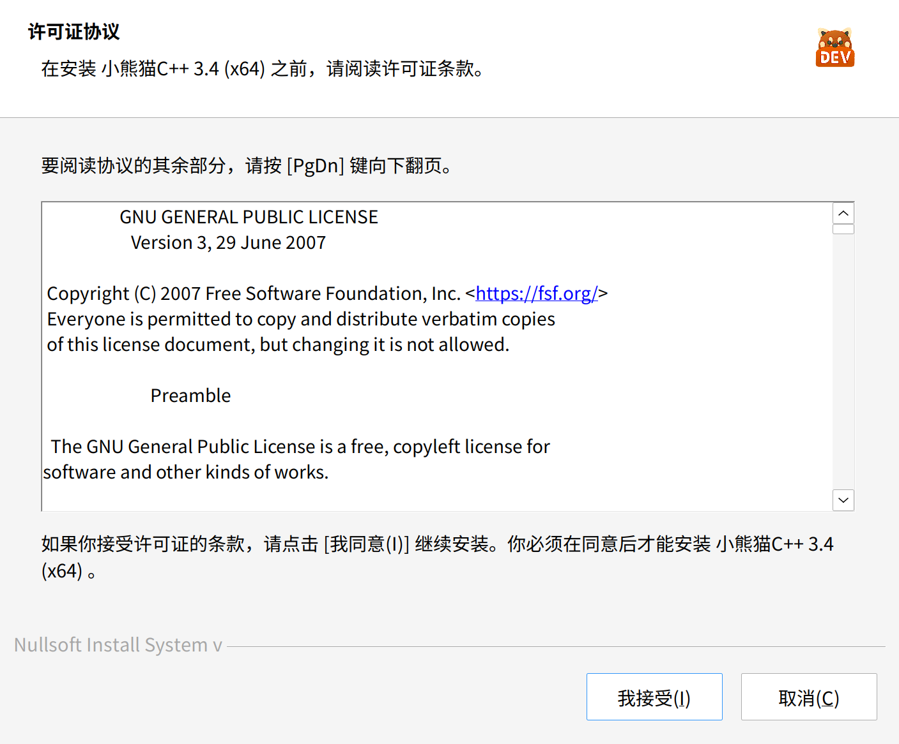
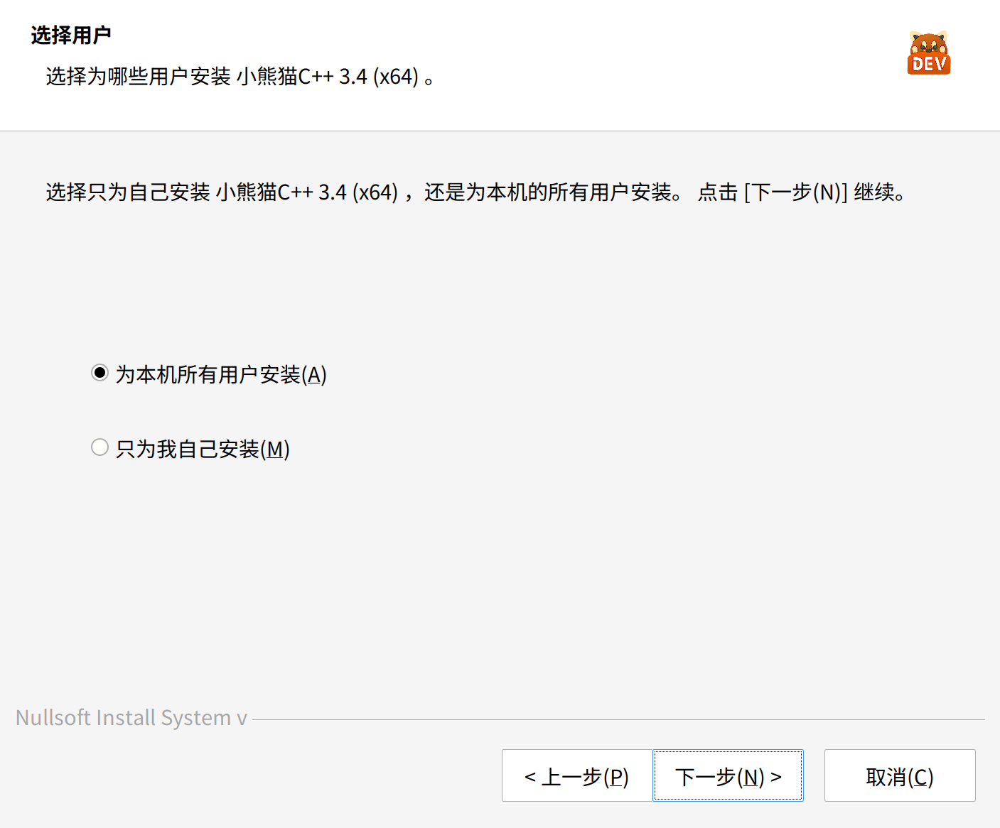
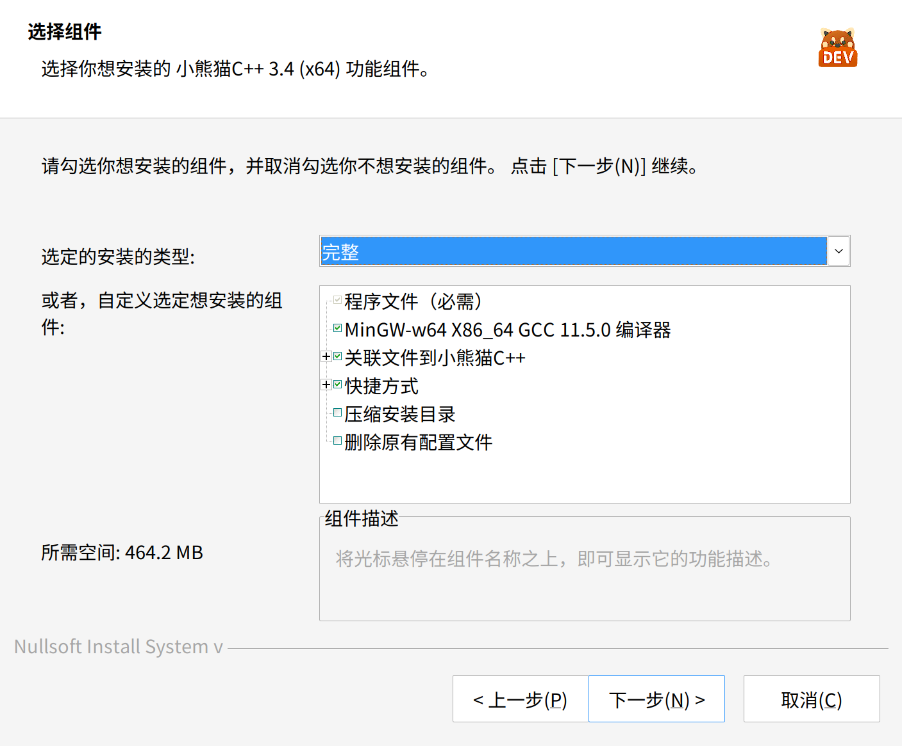
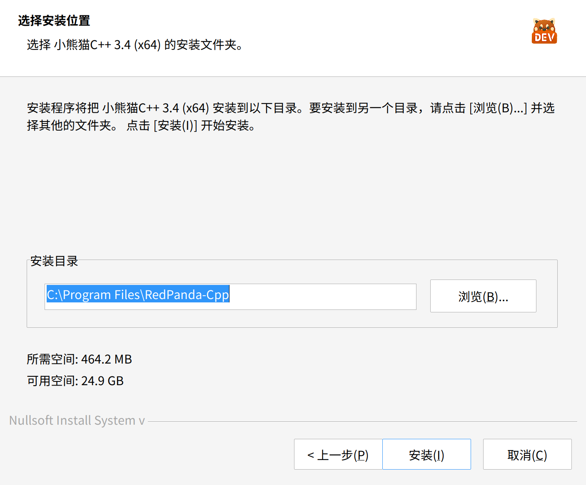
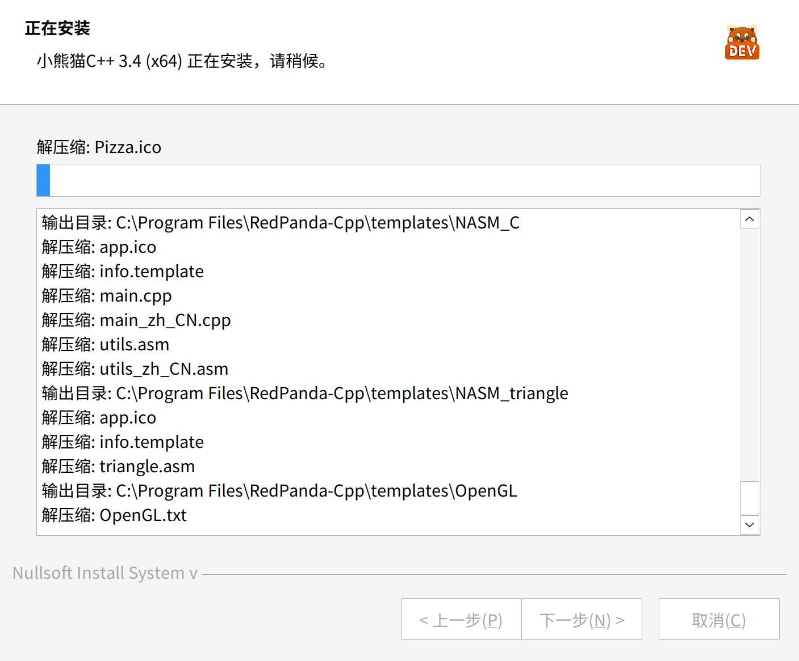
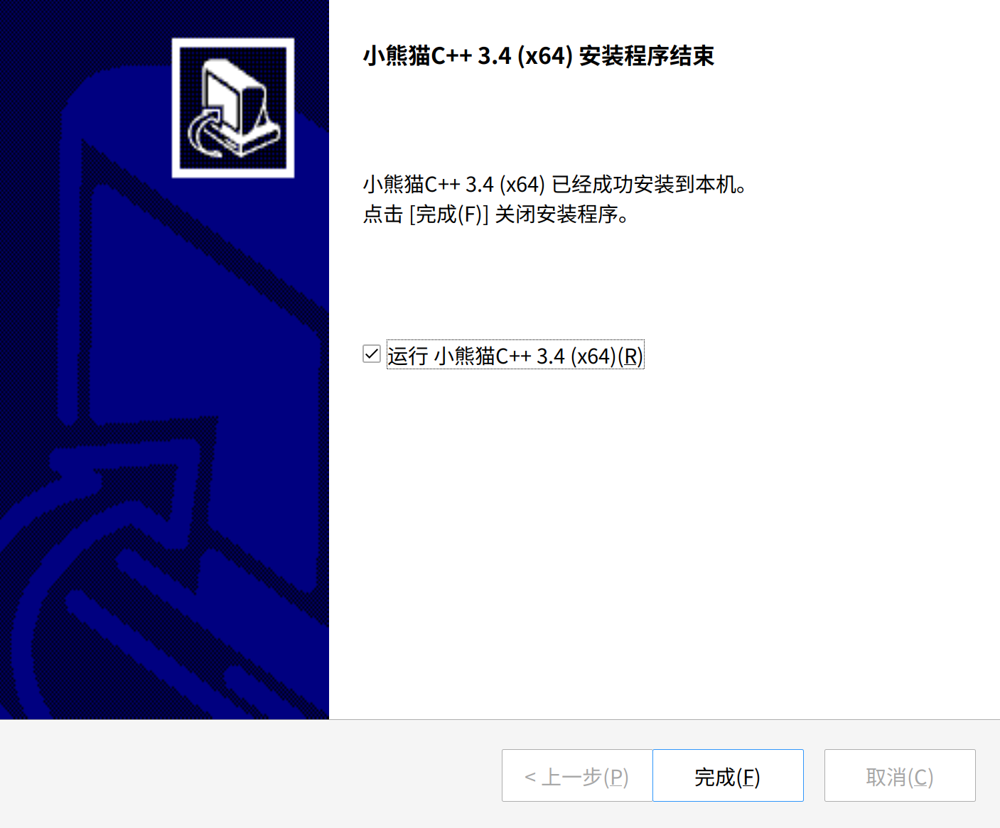
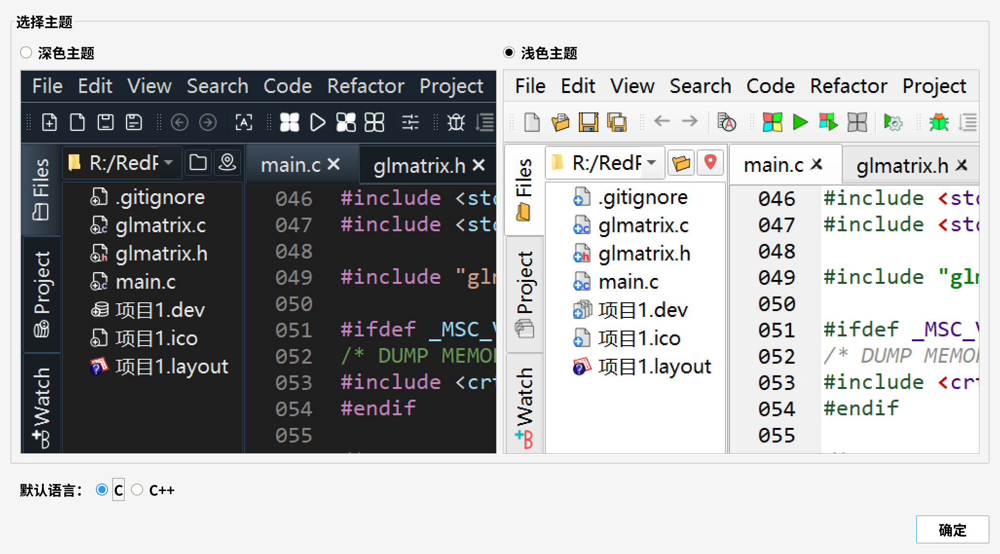
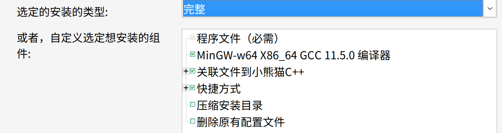
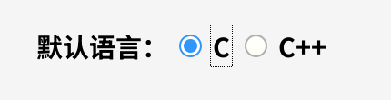
小熊猫C++ 还提供不需要安装的“绿色版”（文件名中带 Portable，扩展名为 .7z），解压后双击其中的 RedPandaIDE.exe 即可使用，适合在机房或 U 盘中使用。两种版本的界面和用法完全相同。安装路径和保存程序的文件夹最好不要包含中文和空格。
（3）认识主界面。小熊猫C++ 的主界面如⟦图1-15⟧ 所示。
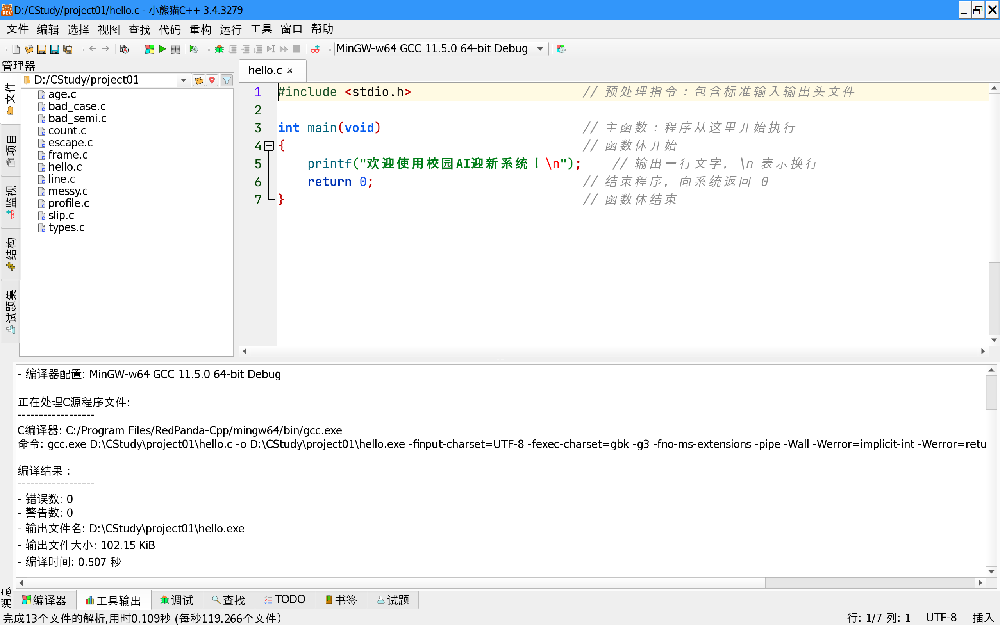
123 456（4）基本配置。安装完成后，建议做好以下三项配置：
D:\CStudy\project01，用来保存项目一的程序；再选择“文件”→“选择工作文件夹”，选中这个文件夹。左侧的管理器中会列出文件夹中的文件，双击即可打开。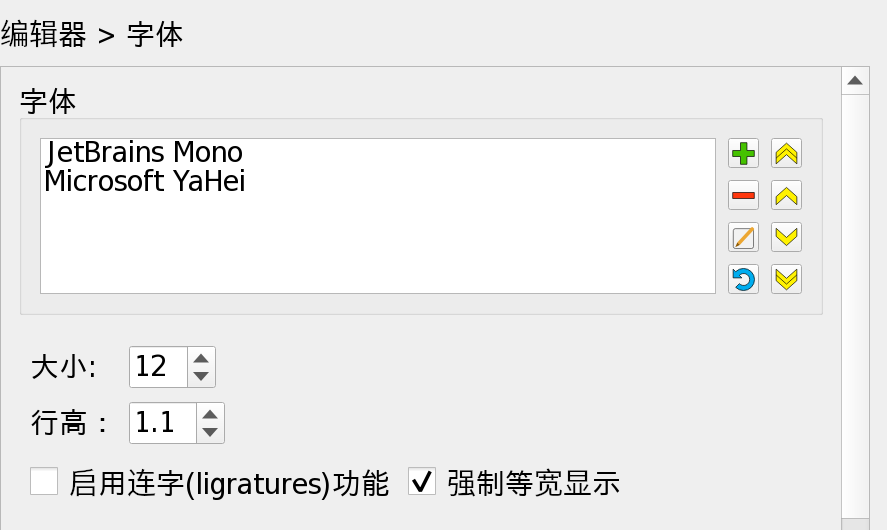
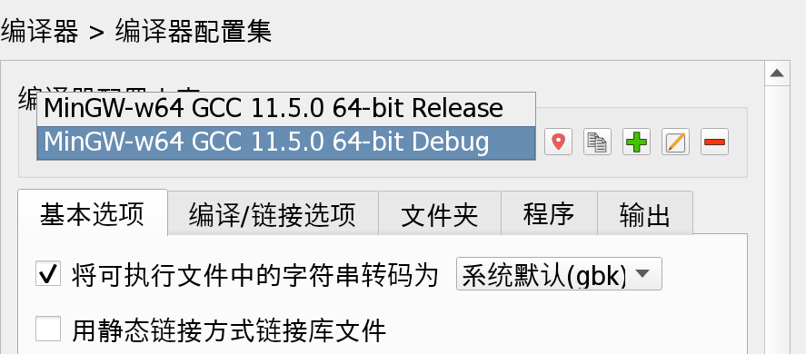
⟦表:setupfaq⟧安装和配置中的常见问题
| 遇到的问题 | 解决办法 |
|---|---|
| 电脑上没有 D 盘 | 在其他非系统盘（如 E 盘）新建 CStudy 文件夹；只有 C 盘时，可以建在 C:\CStudy。文件夹的路径中不要有中文和空格 |
| 安装时提示需要管理员权限 | 机房的计算机请联系任课教师或机房管理员，不要自行改动系统设置；自己的计算机可以改用绿色版（见上面的小智提示） |
| 运行窗口中的中文显示为乱码 | 检查编译器配置集中是否勾选了“将可执行文件中的字符串转码为 系统默认(gbk)”，改好后重新编译、运行 |
| 按 F9 后提示找不到编译器 | 安装时没有选中 GCC 编译器，或下载的是不带编译器的版本，重新安装文件名中带 MinGW64 的安装包 |
身份我是 C 语言初学者，背景在 Windows 11 上安装了小熊猫C++ 3.4（自带 GCC 11.5），材料编译时信息面板提示：（粘贴提示的原文），要求请告诉我可能的原因和检查步骤，一步一步说。
用 C 语言编写的源程序，要经过编辑、编译、连接、运行四个步骤才能得到运行结果（见⟦图1-18⟧）。任何一步出了问题，都要回到编辑步骤修改源程序，再重新编译、连接、运行。
（1）编辑。编辑就是在编辑区输入、修改源程序，并保存为扩展名为 .c 的源文件。在小熊猫C++ 中选择“文件”→“新建”→“新建C/C++文件”（快捷键 Ctrl+N）新建文件（见⟦图1-19⟧），输入代码后按 Ctrl+S 保存，第一次保存时要选择保存位置并输入文件名，如 profile.c。
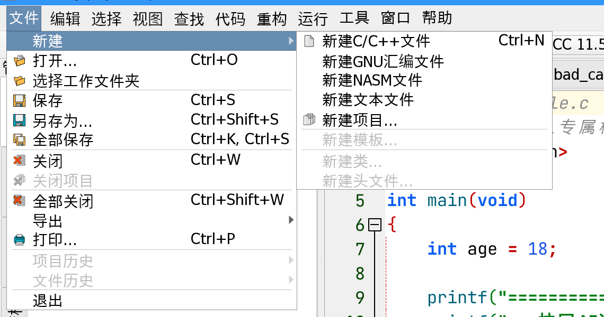
（2）编译。编译就是由编译器检查源程序有没有语法错误，并把它翻译成计算机能识别的机器指令，生成目标程序。如果源程序有语法错误，编译器会停止翻译，在信息面板的“编译器”标签页中列出错误所在的行号、列号和描述，编辑区中出错的行也会用红色标记（见⟦图1-20⟧）。双击信息面板中的错误，光标会自动跳到出错的位置。
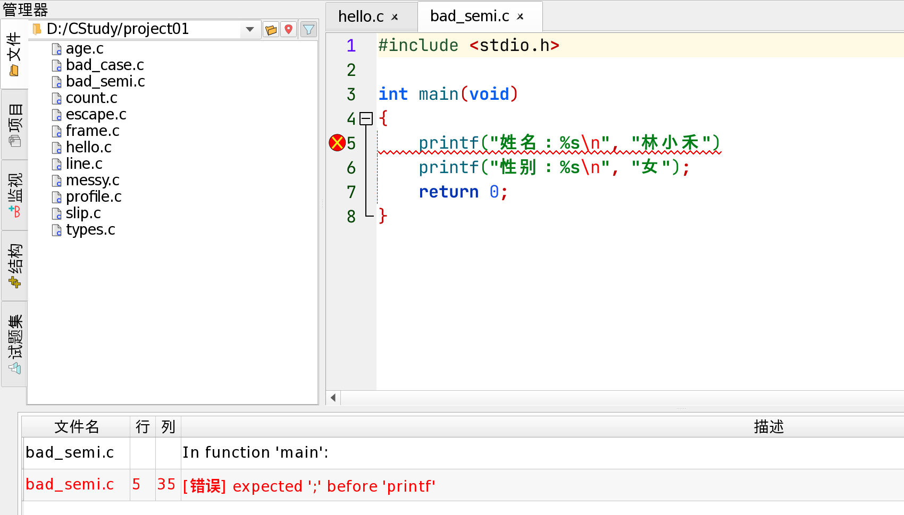
⟦图1-20⟧ 中的提示“expected ';' before 'printf'”的意思是：“在 printf 之前应该有一个分号”。注意，编译器报告的是第 5 行第 35 列，也就是第 5 行的末尾——漏写分号时，编译器往往到下一行才“发现”问题，所以要同时检查出错行和它的上一行。
（3）连接。连接（也叫链接）就是把目标程序和程序中用到的库函数（如 printf）组装在一起，生成可以直接运行的可执行程序（Windows 中扩展名为 .exe）。如果程序调用了一个不存在的函数，编译能通过，连接时却会出错。例如，把 printf 误写成 Printf，信息面板会给出⟦图1-21⟧ 所示的提示。
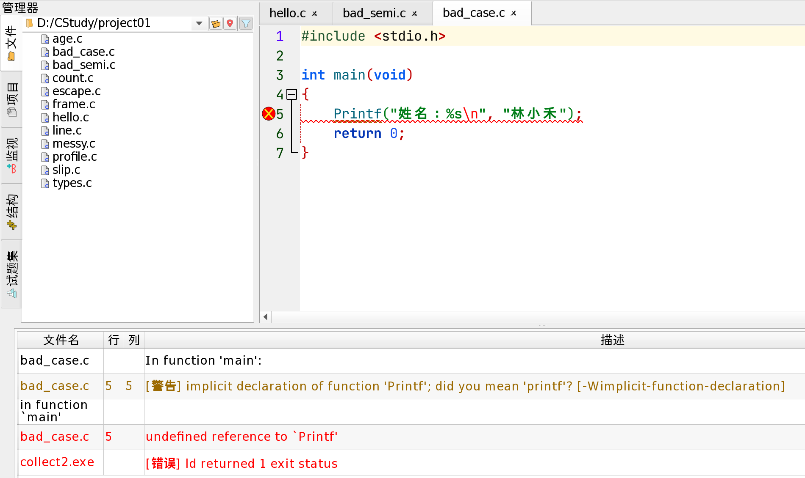
第一条是警告（[警告]）：函数 Printf 没有声明，你是不是想写 printf？第二、三条是连接器 ld 报告的错误：“undefined reference to `Printf'”，即找不到 Printf 的定义，因此无法生成可执行程序。可见，读懂提示信息，就能很快找到错误。
在小熊猫C++ 中，选择“运行”→“编译”（快捷键 F9），会一次完成编译和连接，并在信息面板的“工具输出”标签页中显示编译日志（见⟦图1-22⟧）。日志中“错误数: 0”说明编译、连接都成功了，“输出文件名”就是生成的可执行程序。
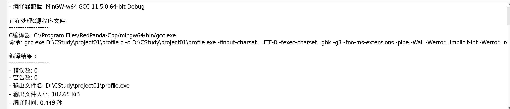
（4）运行。运行就是执行生成的可执行程序，得到运行结果。选择“运行”→“运行”（快捷键 F11），小熊猫C++ 会打开一个运行窗口显示程序的输出（如⟦图1-12⟧ 所示），按任意键可关闭运行窗口。如果源程序修改后还没有重新编译，按 F11 时小熊猫C++ 会自动保存并重新编译，然后再运行。“运行”菜单中的常用命令见⟦图1-23⟧。
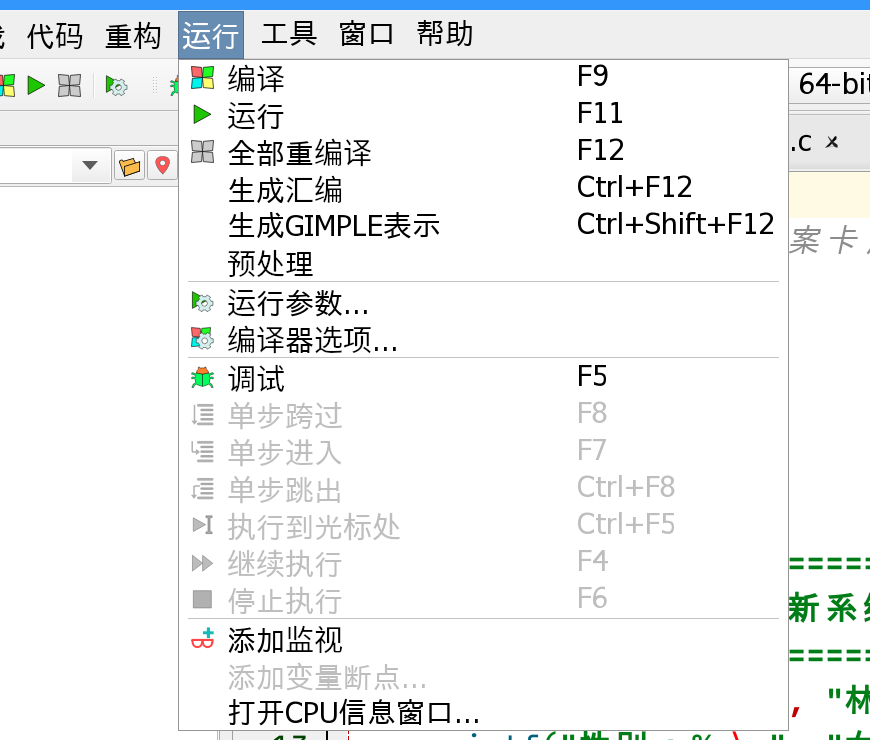
编译、连接成功，只说明程序中没有编译器能查出的错误。程序的运行结果是否符合要求，还要仔细核对：文字有没有错、格式是否整齐、数值是否正确。这类错误叫逻辑错误，编译器一般发现不了，要靠我们自己检查。编译时如果出现了[警告]，也要先看懂、改正，再运行（项目二中详细介绍）。
⟦表1-10⟧C 程序执行流程小结
| 步骤 | 做什么 | 得到的文件 | 小熊猫C++ 中的操作 | 可能出现的问题 |
|---|---|---|---|---|
| 编辑 | 输入、修改、保存源程序 | 源程序 .c | Ctrl+N 新建，Ctrl+S 保存 | 文件没保存、扩展名不是 .c |
| 编译 | 检查语法，翻译成机器指令 | 目标程序 .o | F9 编译（一次完成编译和连接） | 语法错误（漏分号、中文标点等） |
| 连接 | 与库函数组装在一起 | 可执行程序 .exe | 函数名写错、缺少 main 函数 | |
| 运行 | 执行程序，得到结果 | 运行结果 | F11 运行（必要时先自动编译） | 结果不符合要求（逻辑错误） |
在小熊猫C++ 中，按“编辑→编译→连接→运行”的流程，完成个人专属档案程序。每完成一步，在⟦表1-11⟧ 中做好记录。
D:\CStudy\project01。profile.c，保存到 D:\CStudy\project01 中。输入完成后的编辑区如⟦图1-24⟧ 所示。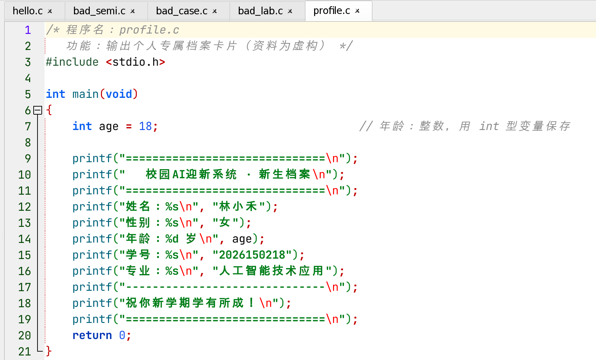
⟦表1-11⟧个人专属档案程序运行记录
| 步骤 | 操作 | 记录内容 |
|---|---|---|
| 编辑 | Ctrl+N 新建，Ctrl+S 保存 | 文件保存位置： |
| 编译、连接 | F9 | 错误数： 警告数： 输出文件名： |
| 遇到的错误及修改方法： | ||
| 运行 | F11 | 运行结果与要求是否一致？不一致的地方： |
完整程序见任务二的 profile.c（
训练 上机运行报到凭条程序。把任务二技能训练中补充完整的 slip.c 输入小熊猫C++，编译并运行，将过程记录在⟦表1-12⟧ 中。
⟦表1-12⟧报到凭条程序运行记录
| 记录项目 | 记录内容 |
|---|---|
| 文件保存位置和文件名 | |
| 第一次编译的错误数、警告数 | |
| 遇到的错误（抄写提示原文） | |
| 错误原因及修改方法 | |
| 运行结果（抄写或截图粘贴） | |
| 运行结果与⟦图1-13⟧ 是否一致 |
拓展：故意制造一个错误（如删掉一个分号、把 printf 写成 Printf），编译后观察并记录提示信息，再把它改正。把任务二技能训练中的训练 2、训练 3 也上机运行，核对预测的结果。
本项目从校园 AI 迎新系统的档案卡片出发，认识了 C 语言程序设计，编写并运行了第一个 C 程序。主要内容归纳如⟦表1-13⟧ 所示。
⟦表1-13⟧项目一知识要点
| 知识点 | 要点 |
|---|---|
| 程序与语言 | 程序是让计算机完成任务的指令集合；计算机语言经历了机器语言、汇编语言、高级语言三个阶段；C 语言贴近硬件、高效，广泛用于控制、光伏、机器人、无人机、装备制造等领域 |
| 程序结构 | 预处理指令 + 主函数；主函数 = 函数头 + 函数体（声明部分 + 执行部分）；程序从 main 开始执行；注释写给人看，编译器忽略 |
| 规则与规范 | 变量定义、printf 语句、return 语句以英文分号结束；代码中用英文标点；区分大小写；括号、引号成对；只有一个 main。一行一句、缩进 4 格、花括号对齐、适当注释 |
| printf 输出 | %d 整数、%f/%.2f 小数、%c 字符、%s 字符串、%% 百分号；\n 换行、\t 制表、\" 双引号、\\ 反斜杠 |
| 执行流程 | 编辑（.c）→ 编译（.o）→ 连接（.exe）→ 运行；小熊猫C++ 中 F9 编译、F11 运行；编译通过不等于结果正确 |
学完本项目，请检查自己是否做到：
⟦表:eval1⟧项目一评价表
| 评价项 | 分值 | 验收证据 |
|---|---|---|
| 成功编译并运行 | 25 | 从提交的 .c 文件当场重新编译、运行，不以截图代替 |
| 档案内容、顺序和换行正确 | 25 | 姓名、性别、年龄、学号、专业五项，每项正确得 5 分 |
| 独立修改与解释 | 20 | 当场改一项内容得 10 分，说清对应的语句得 10 分 |
| 纠错记录与复测 | 20 | 首次提示原文 5 分，修改理由 5 分，复测结果 10 分 |
| 隐私与规范 | 10 | 使用虚构资料 5 分，命名、缩进和注释清楚 5 分 |
60 分为基础达标参考，同时必须能从源程序重新编译运行，并能独立修改一项。选学内容（如自己编写函数）不作为达标门槛。
情境导入中的档案卡片有 7 项信息，而任务二只完成了 5 项，还缺“身高”和“籍贯”。本节请 AI 助教帮忙补全，同时练习一种好用的提问方法——四要素提问法。
向 AI 提问时，说清楚下面四个要素，AI 的回答会更准确、更适合自己：
⟦表1-14⟧四要素提问法
| 要素 | 说明 | 示例 |
|---|---|---|
| 身份 | 我是谁、什么水平 | 我是高职一年级学生，刚学完 printf 输出 |
| 背景 | 在做什么、用什么环境 | 我在用小熊猫C++ 编写个人专属档案程序 |
| 材料 | 已有的代码、提示原文等 | 这是我的程序：（粘贴代码） |
| 要求 | 希望 AI 做什么、怎么回答 | 请帮我增加身高和籍贯两项，只用学过的知识，并解释改动的地方 |
身份我是高职一年级学生，刚学完 C 语言的 printf 输出。
背景我在用小熊猫C++ 编写个人专属档案程序，资料都是虚构的。
材料这是我的程序：（粘贴 profile.c 的全部代码）
要求请在“专业”后面增加“身高：1.68 米”和“籍贯：浙江杭州”两行，身高用变量保存；只用我学过的知识；告诉我改了哪几行、为什么这样改。
好的！需要改动三处：
① 在 int age = 18; 下面增加一个变量：double height = 1.68;，double 类型用来保存小数。
② 在输出专业的语句后面增加：printf("身高：%f 米\n", height);
③ 再增加：printf("籍贯：%s\n", "浙江杭州");
AI 的建议看起来没有问题，但一定要编译、运行来验证。按 AI 的写法，身高一行的运行结果是：
输出的是“1.680000 米”，而档案卡片要求的是“1.68 米”。原因是 %f 默认输出 6 位小数，应改为 %.2f。这说明：AI 的回答要用运行结果来检验，发现问题后再向 AI 追问或自己修改。可以继续追问：“身高输出成了 1.680000，我希望显示 1.68，应该怎么改？”
⟦表1-15⟧AI 建议检验表
| AI 的建议 | 检验方法 | 检验结果 | 是否采纳 |
|---|---|---|---|
增加 double height = 1.68; | 编译，看是否报错 | 编译通过 | 采纳 |
用 %f 输出身高 | 运行，核对输出格式 | 显示 1.680000 | 修改为 %.2f |
用 %s 输出籍贯 | 运行，核对输出内容 | 显示正确 | 采纳 |
① 提问前先想清楚：我是谁、在做什么、有什么材料、要什么结果；② 不把真实的个人信息发给 AI；③ AI 给出的代码先读懂再使用，用编译和运行结果检验；④ 发现问题时，把运行结果作为“证据”告诉 AI，继续追问。
借助 AI 学会的写法，要能自己独立使用。请关闭 AI 对话窗口，也不看 profile7.c，只参照⟦图1-25⟧ 的格式独立完成：